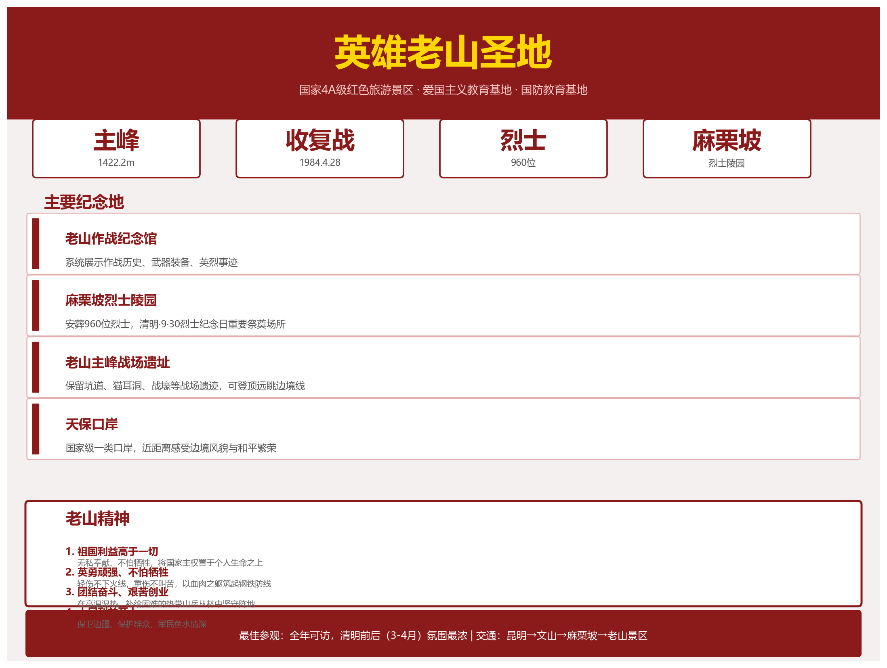

英雄老山圣地

基本信息
- 等级：国家 4A 级旅游景区
- 位置：文山州麻栗坡县南部，与越南河江省接壤
- 主峰海拔：1422.2 米
- 类型：红色旅游、爱国主义教育基地、国防教育基地
- 获评时间：2021 年 5 月
历史背景
战前态势
1979 年对越自卫还击战结束后，越军趁中国军队后撤之际，侵占老山、者阴山等骑线点，修筑大量永备工事、坑道、暗堡，并向中国境内开枪开炮，造成边境民众伤亡和财产损失。据不完全统计，自 1980 年至 1984 年初，越军向麻栗坡县境内发射各类炮弹数万发，打死打伤边民数百人。
收复老山（1984 年 4 月 28 日）
1984 年 4 月 28 日凌晨，昆明军区第 14 军第 40 师奉命发起收复老山作战。经数小时激战，解放军攻占老山主峰及周边高地，毙伤越军千余人，缴获大批武器装备。同日，者阴山也被收复。这一战打断越军"北进"企图，稳定了边境局势。
7·12 大反扑
1984 年 7 月 12 日，越军出动约四个加强团兵力，向老山阵地发起营团级规模大反扑。解放军依托阵地顽强阻击，经一昼夜激战击退越军全部进攻，毙伤越军 3000 余人，我方亦付出重大牺牲。此战后，越军无力再发动大规模进攻，转入零星袭扰。
轮战阶段（1984—1989）
为锻炼部队实战能力，中央军委决定各大军区轮流上老山参战。至 1989 年止，先后有昆明军区、南京军区、济南军区、兰州军区、北京军区、成都军区等部队在老山轮战，涌现出张大权、史光柱等一大批英雄人物。
老山精神
老山精神是在长期防御作战中升华而成的精神财富，四重核心：
- 祖国利益高于一切——无私奉献、不怕牺牲，将国家主权置于个人生命之上
- 英勇顽强、不怕牺牲——轻伤不下火线，重伤不叫苦，以血肉之躯筑起钢铁防线
- 团结奋斗、艰苦创业——在高温湿热、补给困难的热带山岳丛林中坚守阵地
- 人民利益至上——保卫边疆、保护群众，军民鱼水情深
这一精神被视为爱国主义与革命英雄主义的当代典范，被写入全军思想政治教育体系。2014 年，习近平总书记视察驻云南部队时强调"老山精神"的时代价值。
主要纪念地
| 纪念地 | 简介 |
|---|---|
| 老山作战纪念馆 | 系统展示老山作战历史、武器装备、英烈事迹，馆藏丰富 |
| 麻栗坡烈士陵园 | 安葬 960 位烈士，是每年清明、"9·30"烈士纪念日的重要祭奠场所 |
| 老山主峰战场遗址 | 保留坑道、猫耳洞、战壕等战场遗迹，可登顶远眺边境线 |
| 天保口岸 | 国家级一类口岸，近距离感受边境风貌与和平繁荣 |
教育意义
- 国家级爱国主义教育示范基地
- 国家国防教育示范基地
- 党史学习教育、主题党日活动的重要场所
- 每年清明节、烈士纪念日有大量民众、退役军人、学生前往祭扫
- 近年来"红色研学"热度上升，年均接待研学团队数百批次
参观建议
- 最佳时间：全年可访，春（3-4 月清明前后氛围最浓）、秋（10-11 月气候宜人）尤佳
- 交通：昆明 → 文山（高铁/高速）→ 麻栗坡县城 → 老山景区（约 50 公里盘山路）
- 注意事项：尊重烈士陵园肃穆氛围；遵守边境管理规定，勿越界拍照；可提前联系讲解服务
推荐游览线路
麻栗坡烈士陵园（祭奠）→ 老山作战纪念馆（了解历史）→ 老山主峰（登顶体验战场地形）→ 天保口岸（感受边境和平发展）。全程约需 1 天，建议提前预约讲解。
现实意义
老山不仅是一处战场遗址，更是中越关系从对抗走向合作的历史见证。1991 年中越关系正常化后，老山地区由战场转为边境贸易前沿。如今，老山红色旅游与天保口岸边贸旅游联动，成为麻栗坡县文旅经济的双引擎。铭记历史、珍爱和平，传承"老山精神"，是这一圣地留给当代人的深远启示。